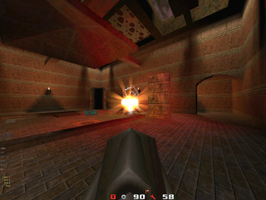
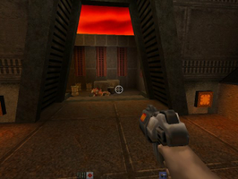
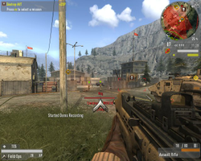

Quake Serie
id Softwares  Spiele aus der Quake-Serie können für das Genre der Ego-Shooter als die einflussreichste angesehen werden, da sie viele Standards in Sachen Technik, Steuerung, Modifizierbarkeit und Multiplayer setzten. Durch letzteres trugen sie maßgeblich an der Entwicklung des E-Sports
Spiele aus der Quake-Serie können für das Genre der Ego-Shooter als die einflussreichste angesehen werden, da sie viele Standards in Sachen Technik, Steuerung, Modifizierbarkeit und Multiplayer setzten. Durch letzteres trugen sie maßgeblich an der Entwicklung des E-Sports  bei. Da id traditionell als einer der wenigen Hersteller ihre Spiele auch für Linux anbieten und darüber hinaus den Quellcode der älteren Quake-Engines unter der GPL-Lizenz veröffentlicht, haben diese Spiele auch für Linux eine besondere Bedeutung, da inzwischen eine Vielzahl von freien Spielen auf Basis der Quake-Eingines entstanden sind. Hier eine Übersicht über alle bisher veröffentlichten Spiele in chronologischer Reihenfolge:
bei. Da id traditionell als einer der wenigen Hersteller ihre Spiele auch für Linux anbieten und darüber hinaus den Quellcode der älteren Quake-Engines unter der GPL-Lizenz veröffentlicht, haben diese Spiele auch für Linux eine besondere Bedeutung, da inzwischen eine Vielzahl von freien Spielen auf Basis der Quake-Eingines entstanden sind. Hier eine Übersicht über alle bisher veröffentlichten Spiele in chronologischer Reihenfolge:
|  |  |  |
| Quake 1 | Quake 2 | ET:QW |
Quake 1¶
Quake 1 erschien 1996 und war das erste Computerspiel, das vollständig dreidimensional war. Die Story erinnert vom Konzept an Doom 1 (und demnach auch an Doom 3): Durch Experimente wird ein Portal zu einer dämonischen Macht, Codename Quake, geöffnet, die die Forschungsbasis überfallen hat. Der Spieler muss als einzig Überlebender in die fremde Dimension gelangen um die Feinde zu besiegen. Bereits dieser Teil verfügt über einen Mehrspielermodus, aus dem später Quakeworld (kurz QW) entstand, ein für das Internet optimierter Mehrspieler-Client, der den Grundstein moderner Multiplayer-Shooter legte. Man sollte davon absehen Quake 1 auf Rechnern zu installieren die sich in einem sicherem Netzwerk befinden da viele exploits public sind und ID Software damals eine backdoor installiert hatte. Dieses Risiko kann durch die Nutzung eines aktuellen Client umgangen werden. Zu empfehlen sind beispielsweise QuakeSpasm für den Einzelspielermodus sowie ezQuake für den Mehrspielermodus (QuakeWorld Client).
Quake 2¶
Inhaltlich hat der zweite Teil nichts mit dem ersten gemein, weshalb dieses Spiel ursprünglich unter einem anderen Namen erscheinen sollte. Es erzählt die Geschichte vom Krieg zwischen der Menschheit und den außerirdischen Strogg in einem Science-Fiction-Szenario. Im Gegensatz zum ersten Teil wurde der zweite von Anfang an mit 3D-Hardwarebeschleunigung und optimiertem Netzcode ausgeliefert, wodurch der Mehrspielermodus die Nachfolge von QW antrat. Man sollte davon absehen Quake 2 auf Rechnern zu installieren die sich in einem sicherem Netzwerk befinden da viele exploits public sind und ID Software damals eine backdoor installiert hatte. Wer Quake 2 im Netzwerk spielen will sollte zu einem alternativem client greifen, empfohlen sei an dieser Stelle R1Q2 . Ein aktueller Client für den Einzelspielermodus, der viele Fehler gerade in Kombination mit aktueller Hardware beseitigt, ist beispielsweise der Yamagi Quake II Client .
Quake 3¶
Der dritte Teil ist im Gegensatz zu den Vorgängern ein reiner Multiplayershooter mit rudimentärem Einzelspielermodus und kann demnach als eine Fortsetzung des QW-Konzepts angesehen werden. Er trug stark zu der Verbreitung von E-Sport bei.
Quake 4¶
Der vierte Teil knüpft im Einzelspielermodus an die Story des zweiten Teils an und führt sie fort. Dieser Teil bekam erstmals keine eigene, neue Grafik-Engine, sondern verwendete die Doom3-Engine und wurde darüber hinaus nicht von id, sondern von Ravensoft entwickelt. Der Mehrspielermodus orientiert sich am dritten Teil, erreichte aber bei weitem nicht dessen Erfolg.
Nicht zur Quake-Serie gehörend aber trotzdem hier erwähnenswert ist außerdem:
Enemy Territory: Quake Wars¶
Obwohl Enemy Territory: Quake Wars (kurz ET:QW) zwar im gleichen Szenario wie Quake 2 und 4 spielt (und dabei zeitlich vor dem zweiten Teil angesiedelt ist), handelt es sich um einen Nachfolger zu Wolfenstein Enemy Territory, die klassischen Spielmodi aus der Quake-Serie sucht man hier also vergebens. Wie sein Vorgänger und Quake 3 handelt es sich um einen reinen Multiplayer-Shooter. Neben den Eigenheit der Enemy Territory-Serie wurden durch die großen Karten und Fahrzeuge auch Elemente aus den Battlefield-Spielen integriert.
Neben den offiziellen Spielen gibt es eine Reihe von Projekten, die versuchen einen bestimmten Teil nachzubauen, als Mod oder als komplettes Open-Source-Spiel. Dazu zählen unter anderem Open Quartz (Quake 1-Nachbau unter der GPL), OpenArena (selbiges für Quake 3) sowie der Doom 3-Mod Lost Marine , der dem zweiten Teil nachempfunden ist.
Links¶
idsoftware.com
- Webauftritt des Herstellers id Software planetquake.gamespy.com
- Große und internationale Community-Seite planetquake.ingame.de
Deutsche Community-Seite des Ingame-Netzwerks
quake.de
- Große deutsche Community-SeiteGtkRadiant
- LeveleditorInsecure
Known exploits for Quake1+2
- Erstellt mit Inyoka
-
 2004 – 2017 ubuntuusers.de • Einige Rechte vorbehalten
2004 – 2017 ubuntuusers.de • Einige Rechte vorbehalten
Lizenz • Kontakt • Datenschutz • Impressum • Serverstatus -
Serverhousing gespendet von